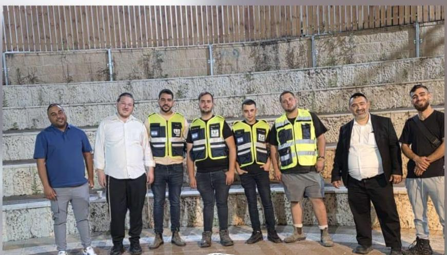
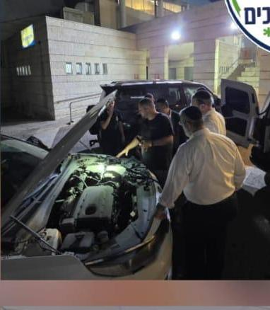
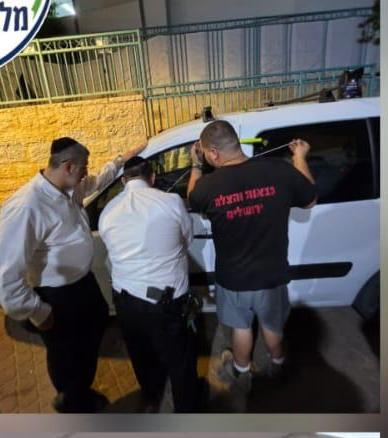
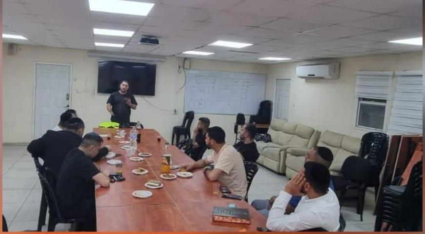

הרעיון נולד
אחרי השבעה באוקטובר, קבוצת נהגים החליטה להפוך את הכאב לעשייה – ולהיות שם בשביל מי שנתקע בדרך.
ברוכים הבאים לארגון מלאכים בדרכים – ארגון התנדבותי המוקדש לעזרה ותמיכה בנהגים הנתקעים בדרכים, ולהנצחת זכרם של הנרצחים בשביעי באוקטובר.
הארגון הוקם מתוך מטרה לסייע לנוהגים בכבישים, אבל גם מתוך צורך עמוק להנציח. השילוב בין השניים הוא מה שמניע אותנו: להפוך זיכרון לעשייה יומיומית שמצילה חיים.
החל מפנצ'רים, בעיות מצבר ונזילות שמן, ועד ילדים נעולים ברכב וחלונות ממ"ד שלא נסגרים – המתנדבים שלנו מגיעים במהירות למקום ונותנים מענה מקצועי ומהיר, בכל שעה.
צוותי החירום שלנו מעניקים סיוע ראשוני, מנחים על בטיחות הנהג ומסייעים בהעברת הרכב למוסך הקרוב. במקביל אנחנו מפעילים קו חירום 24/6 שדרכו ניתן לקבל סיוע מיידי.
מלבד הסיוע הישיר, אנחנו מעורבים בפעילות קהילתית: הרצאות והדרכות בנושאי בטיחות בדרכים, ערבי כינוס, והשתתפות בפעילויות להנצחת זכרם של הנרצחים.

אחרי השבעה באוקטובר, קבוצת נהגים החליטה להפוך את הכאב לעשייה – ולהיות שם בשביל מי שנתקע בדרך.
הוקם מוקד חירום עם מספר קצר, ומערך כוננים אזורי שמאפשר הגעה מהירה בכל שעות היום והלילה.
הארגון גדל למערך של מאות מתנדבים עם ציוד חילוץ, אפודים והכשרות מקצועיות על חשבון הארגון.
אלפי קריאות סיוע בשנה, פעילות קהילתית, הרצאות בטיחות בדרכים וערבי הנצחה.
לא הדמיות – ככה זה נראה כשקריאה נכנסת למוקד.



אנחנו לא מבקשים כלום בחזרה. לא כרטיס אשראי, לא מנוי, לא דמי טיפול.
כונן מהאזור שלכם יוצא ברגע שהמוקד מקבל את הקריאה.
לנהג שנתקע בצד הדרך מגיע מענה רגוע, מקצועי ומכבד.
כל קריאה שאנחנו עונים לה נעשית לזכר הנרצחים בשבת השחורה.
מוקד חירום ארצי, מתנדבים בכל אזור בארץ, מענה מיידי – והכול בהתנדבות מלאה וללא עלות.